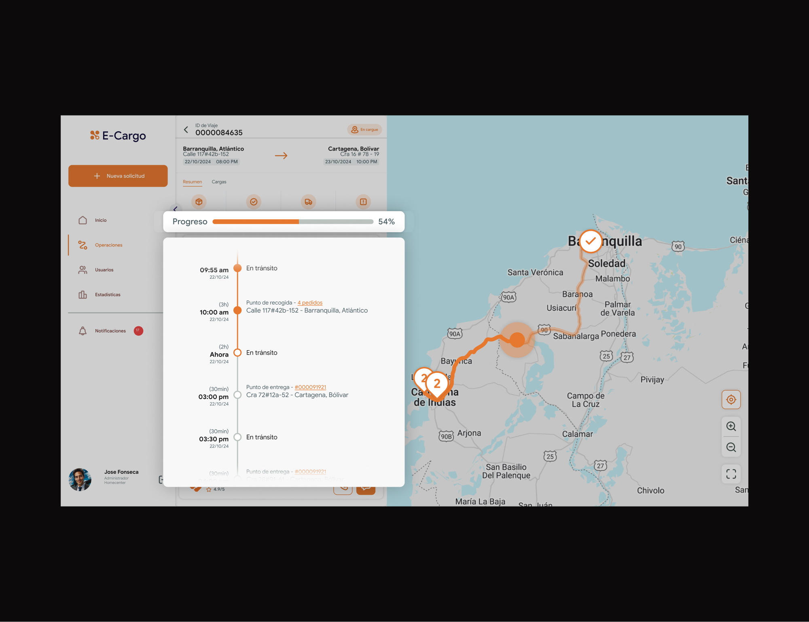
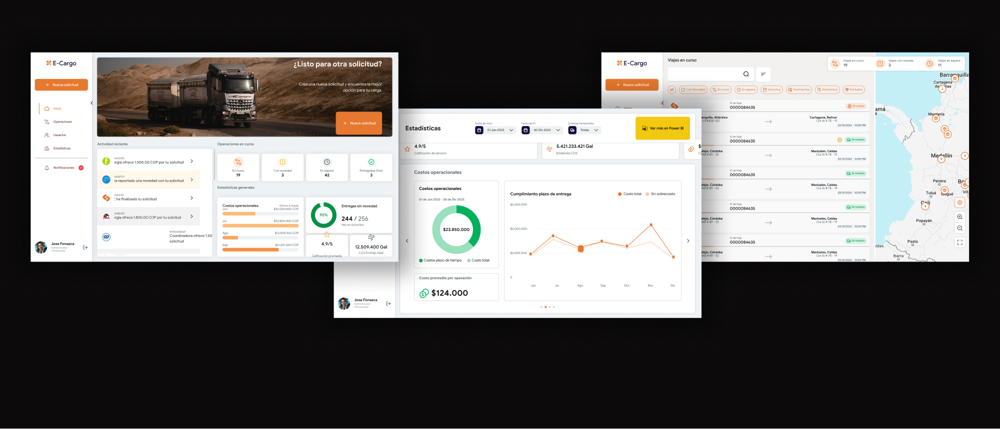
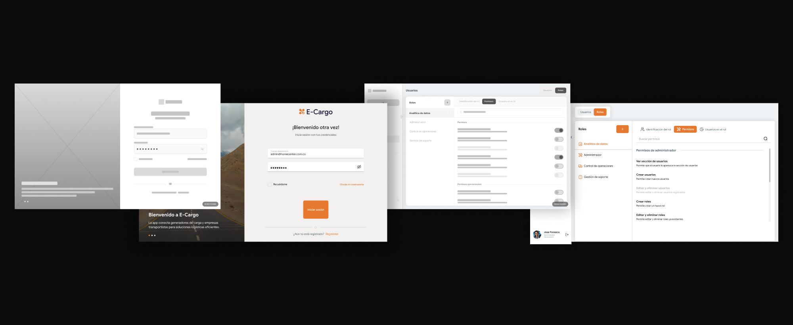
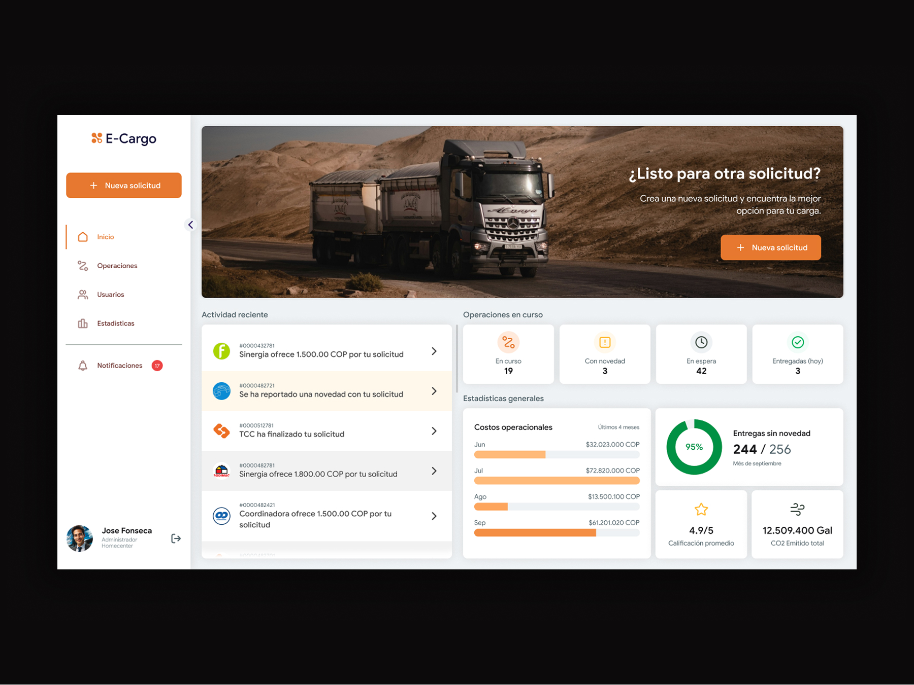
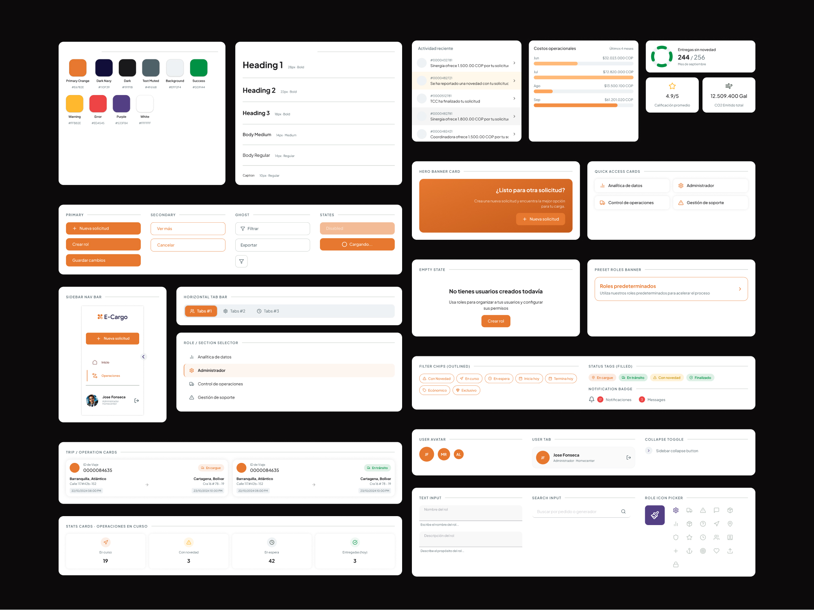

A
Guided workflows
Instead of exposing all complexity at once, tasks were structured into guided steps to reduce cognitive load.


This project was developed at Consware for a logistics company in Colombia. The goal was to design a digital platform to manage freight operations across multiple user roles within a highly complex system.
The platform involved three main user types, each with different workflows and priorities. For this case study, I focus on the Cargo Generator role, where I had the most direct impact. The challenge was not only designing interfaces, but aligning business goals, technical constraints, and user experience in a system that was already complex and actively evolving.
The system required users to manage complex logistics operations, but lacked clarity, structure, and usability.
“Managing shipments requires too many steps, and it’s easy to lose track of what’s going on.”
— Cargo Generator user
Users had to process too much information without clear prioritization.
Tasks were spread across multiple steps with no clear guidance.
Business expectations, technical constraints, and user needs often conflicted.
The process was highly iterative and required constant alignment between stakeholders, developers, and design decisions. Rather than following a linear workflow, the project evolved through continuous feedback and refinement.
Frequent sessions with the client to validate business requirements and priorities.
Breaking down complex logistics processes into clearer, more structured user flows.
Establishing reusable UI components and patterns to ensure consistency and speed across the product.
Multiple UI iterations based on client feedback and evolving constraints.
Close communication with developers to ensure feasibility and alignment with system capabilities.

Instead of exposing all complexity at once, tasks were structured into guided steps to reduce cognitive load.

The interface was structured to guide attention through clear visual hierarchy. Primary actions, such as creating a new request, are prominently displayed, while operational data is organized into scannable sections that allow users to quickly understand system status and prioritize tasks.

A shared design system was introduced to ensure consistency across a complex multi-role platform. Reusable components and patterns allowed the interface to scale while maintaining clarity and coherence..

The redesign introduced a more structured and understandable experience, helping users navigate complex workflows with greater confidence. Feedback from internal teams highlighted improvements in usability, especially in how tasks were organized and prioritized within the Cargo Generator flow.
This project reinforced the importance of designing within real-world constraints — balancing business goals, technical limitations, and user experience.
Working on multiple projects simultaneously required adaptability and prioritization, influencing how decisions were made. If I approached this project again, I would validate user assumptions earlier in the process to reduce iteration cycles later on.